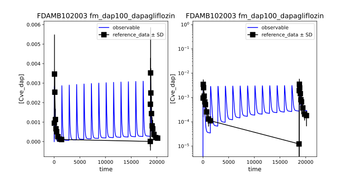
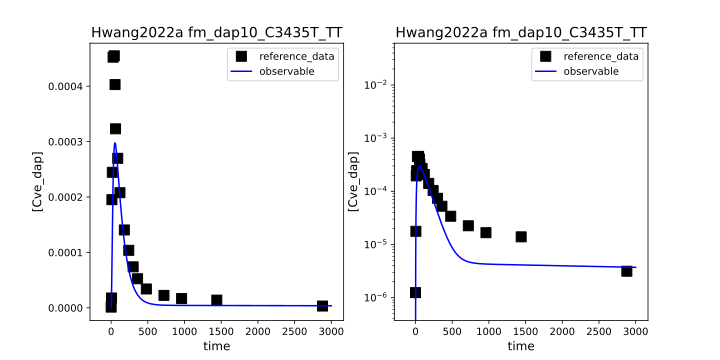
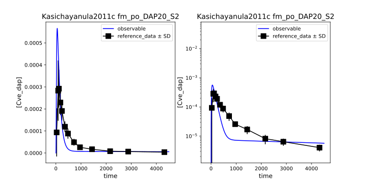
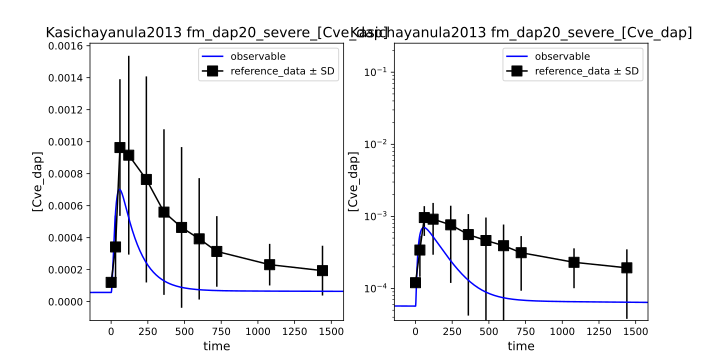
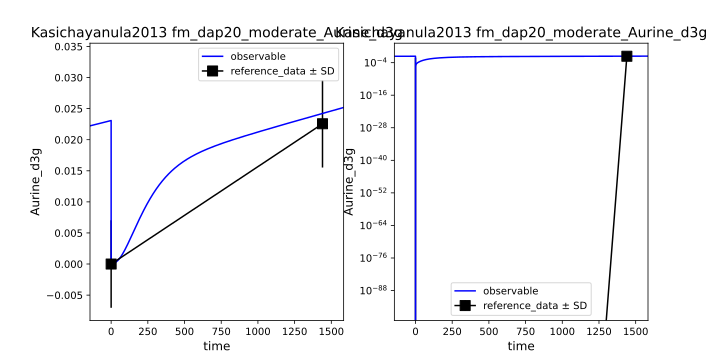
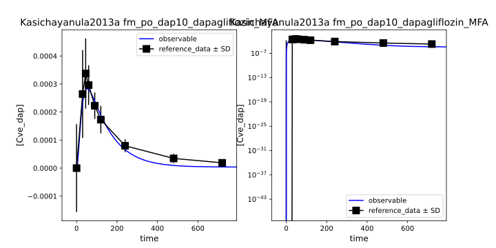
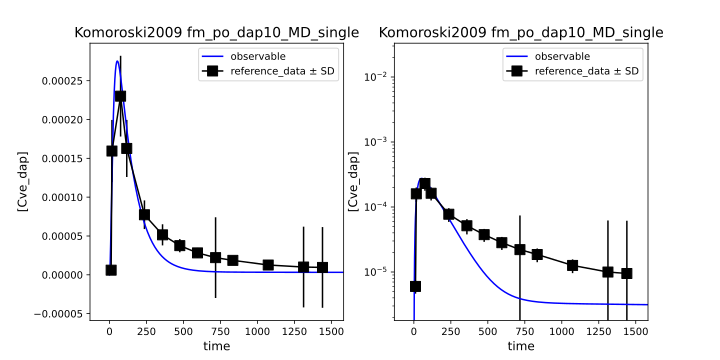

Optimization Performance
Data point prediction
Fits



















Optimization results
| run | success | duration | cost | ftissue_dap | Kp_dap | DAP2D3G_Vmax | KI__f_DAP2D3G | KI__DAPEX_k | KI__D3GEX_k | GU__Ka_dis_dap | GU__DAPABS_k | message | x | x0 | |
|---|---|---|---|---|---|---|---|---|---|---|---|---|---|---|---|
| 0 | 6 | True | 150.741772 | 729.529871 | 0.010000 | 25.517381 | 0.019920 | 9.999990 | 0.018152 | 0.450356 | 0.848420 | 0.059465 | `xtol` termination condition is satisfied. | [0.010000122747666328, 25.517380513186023, 0.01992005476805105, 9.999990451401281, 0.01815179124844871, 0.45035618074418376, 0.8484201414414877, 0.059464824495600456] | [1.7225276783265775, 4.09466415469058, 0.0029900635565317532, 0.24921200825543477, 0.00015717306682812046, 0.20544881991153094, 0.012026159643679821, 0.0007713634614946222] |
| 1 | 5 | True | 209.909076 | 729.550285 | 0.010000 | 25.367126 | 0.019913 | 9.999999 | 0.018099 | 0.451848 | 0.838233 | 0.060597 | `xtol` termination condition is satisfied. | [0.010000005791496127, 25.367126364151247, 0.019912701617278875, 9.999999181204556, 0.018098970962882426, 0.45184807498149887, 0.838232718403919, 0.06059698319870762] | [0.15773598118406218, 7.342790622800431, 0.13650414869904925, 1.356599960384291, 0.00010885585548669734, 5.454624018449523, 0.00144175322178948, 1.8386882675804396e-05] |
| 2 | 2 | True | 181.422313 | 729.561484 | 0.010000 | 25.185550 | 0.019889 | 9.998021 | 0.018028 | 0.452617 | 3.652342 | 0.013789 | `xtol` termination condition is satisfied. | [0.010000374904549936, 25.18554999521163, 0.019888801733098937, 9.998021420714224, 0.018028453137011135, 0.45261703968669414, 3.652341933021347, 0.01378854941606163] | [3.1311898620636427, 1.3059724846994765, 0.26273018864874187, 0.9787432515698002, 8.038433295518397, 0.9714963870623463, 0.002728355561011114, 4.542338403046947] |
| 3 | 9 | True | 181.542299 | 729.567302 | 0.010000 | 25.176494 | 0.019862 | 10.000000 | 0.018017 | 0.451846 | 3.656290 | 0.013756 | `xtol` termination condition is satisfied. | [0.010000000979717007, 25.176494329523788, 0.01986182906517501, 9.99999995698075, 0.018017447637243215, 0.4518462752981047, 3.6562898669905284, 0.013755779371276316] | [0.034121223513581975, 2.6002306943679083, 0.2949984220443252, 0.40554692947157944, 0.0017089260015688286, 0.767010294235503, 0.31224622186065026, 5.4150423594608556e-05] |
| 4 | 7 | True | 200.997603 | 729.569294 | 0.010000 | 25.164151 | 0.019870 | 9.998629 | 0.018029 | 0.452023 | 3.657571 | 0.013747 | `xtol` termination condition is satisfied. | [0.010000233333418866, 25.164151437213164, 0.01987024106968213, 9.998628523188176, 0.018029114370093073, 0.45202330544801217, 3.657571166220561, 0.013746707730536083] | [0.023433041891137752, 2.2384072977799354, 0.0124419244518032, 1.0446532087921951, 0.00030312238071365723, 1.243232256976332, 0.7141203613347239, 0.0051715940019626564] |
| 5 | 8 | True | 197.741061 | 729.595335 | 0.010001 | 25.197293 | 0.019864 | 9.999734 | 0.018027 | 0.451084 | 3.644420 | 0.013779 | `xtol` termination condition is satisfied. | [0.01000075393319458, 25.19729328299351, 0.019863867914075017, 9.999734398061822, 0.018027113451431716, 0.4510843145646864, 3.6444196189509404, 0.013778938711912648] | [2.852050750233661, 21.807421989463396, 2.317810326576689, 1.7967771871347136, 0.0008617606633551519, 8.334585303329627, 0.04594342934609038, 0.00038900071229158] |
| 6 | 1 | True | 176.268846 | 1487.103827 | 1.313003 | 1.866406 | 0.037765 | 0.443083 | 0.007599 | 0.345621 | 2.674458 | 0.042426 | `xtol` termination condition is satisfied. | [1.313003305922506, 1.8664062255961318, 0.0377651856717531, 0.44308281667164184, 0.007598984573577459, 0.3456207404055754, 2.6744576443863037, 0.04242585391120175] | [35.36964651257673, 15.556028199907328, 0.16144949223141794, 0.8780878939764492, 0.00011351491313443959, 0.45017754295544427, 0.2918546588107279, 0.0005813428587542292] |
| 7 | 4 | True | 124.578800 | 2886.556618 | 1.002171 | 1.011730 | 0.013519 | 9.923724 | 0.009132 | 0.296675 | 2.860356 | 0.001118 | `xtol` termination condition is satisfied. | [1.002170555639689, 1.011730288335397, 0.013518734346270002, 9.923724074666438, 0.009132404985200978, 0.2966753995549468, 2.860355995636113, 0.0011175494956896274] | [0.19487033538473672, 4.984866997399214, 0.010092647681281272, 1.4700086242674086, 0.7838696266110557, 0.1143181519674235, 0.06077933951107043, 2.871533142378854e-05] |
| 8 | 0 | True | 144.002085 | 3515.104157 | 0.014296 | 15.134130 | 3.184003 | 0.720038 | 4.137813 | 0.276297 | 4.530517 | 0.000279 | `xtol` termination condition is satisfied. | [0.014295521569143935, 15.134130011204032, 3.1840026409916726, 0.7200379673106194, 4.1378131371780285, 0.27629667332314195, 4.530517376305615, 0.0002794484126471772] | [0.1112401028676526, 2.058971507163851, 21.341445506709523, 0.4276118943233435, 6.735868812409151, 4.6018057072288405, 0.029138104359502176, 1.7274082848178632e-05] |
| 9 | 3 | True | 132.184509 | 3831.795543 | 0.159056 | 2.190796 | 64.843478 | 9.422652 | 1.216633 | 0.282347 | 75.940297 | 0.000198 | `xtol` termination condition is satisfied. | [0.1590555424777302, 2.1907956022423956, 64.84347780979999, 9.42265199641158, 1.216633367865258, 0.28234664405539767, 75.94029650649924, 0.0001984655783342527] | [0.09577740183050049, 16.950065623533156, 8.818328057693092, 0.28109029465613933, 0.0003264608091931141, 1.676346137399734, 0.08167562993109637, 0.00020655034769212138] |